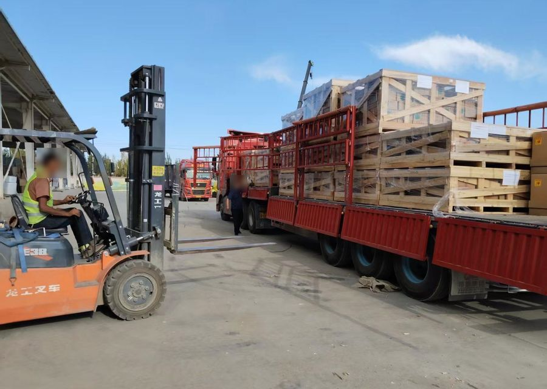
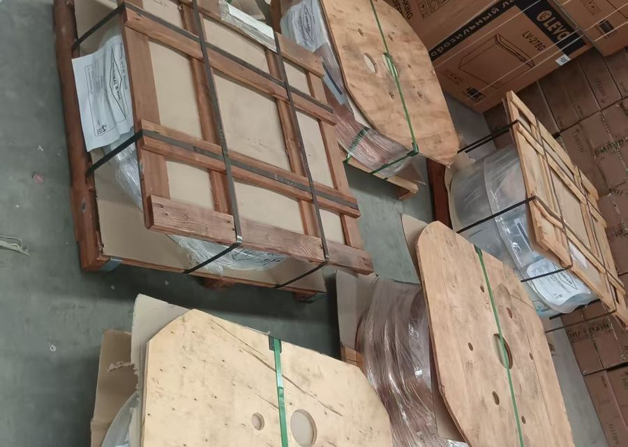

从深圳、义乌、广州、上海集货，经霍尔果斯口岸以 TIR 密封挂车一站直出，中途免倒装、免开箱，14–18 天抵德黑兰西关（Gomrok Gharb）或阿普林陆港。全程按 CPT / DAP 德黑兰海关交货，由收货人的清关代理在海关自主缴税、清关、提货。
- 14–18 天仓到关平均时效（国内集运仓至德黑兰西关）
- 霍尔果斯 / 伊尔克什坦出境监管口岸
- 萨拉赫斯 / 因切布伦伊朗入境海关
- CPT / DAP德黑兰关区交货（协助对接本地清关行）
货运决策参数对比：中伊三种物流运输通道经济性分析
| 核心评估指标 | TIR 跨境陆运卡航 | 阿巴斯传统海运 | 国际航空货运 |
|---|---|---|---|
| 交割节点与全程周期 | 14–18 天 直达德黑兰海关保税库 | 35–55 天（抵港阿巴斯港口） | 5–8 天（抵德黑兰伊玛目霍梅尼机场） |
| 海关提货交割点 | 德黑兰西关（Gomrok Gharb）/ 阿普林陆港 | 阿巴斯集装箱堆场（CY） | 德黑兰机场监管货站 |
| 过境查验与作业方式 | 国际 TIR 铅封直达，中亚过境免倒装、免过境开箱 | 中转港多次倒装，港口查验排队严重 | 机场货站安检逐件过机排仓 |
| 特种货物准入能力 | 合规承接 9类纯锂电（UN3480/3481）、光伏与大件 | 易燃易爆海运订舱审批严苛、附加费昂贵 | 航司严格限制大容量单体电池与液体 |
| 主流贸易交付条款 | CPT / DAP 德黑兰海关（货主自主清关缴税） | CIF 阿巴斯 | CPT 德黑兰机场 |
陆路干线全流程动线：从国内集货仓到德黑兰海关保税监管区
- 第 1–2 天
国内分拨仓集运装车（义乌 / 深圳分拨中心）
义乌苏溪集拼中心与深圳平湖集运仓统一收货。核对装箱单与发票，按配载计划采用 13.6 米帘布车打托加固装箱，传输出口预配舱单。
- 第 3–4 天
新疆霍尔果斯口岸结关施封
车队由 G30 连霍高速抵达霍尔果斯综合保税区，办理出口放行手续。海关核验并加施 TIR 国际关锁与防篡改电子封签，打印出境 TIR 单证。
- 第 5–11 天
中亚国际走廊闭环过境（哈萨克斯坦 → 土库曼斯坦）
经哈萨克斯坦阿拉木图、奇姆肯特直通土库曼斯坦境内公路网。全程依托 TIR 公约享受免过境关税、免押金通行，双驾司机轮流驾驶，途经国中途不开箱、不倒装。
- 第 12–14 天
伊朗萨拉赫斯口岸入境过磅
车队进入伊朗东北部萨拉赫斯公路口岸。海关比对 TIR 封签完整性，数据同步录入伊朗 ASYCUDA 海关通关系统，办理境内保税转关车队编组。
- 第 15–18 天
进抵德黑兰西关保税库，移交入库凭证
车队直抵德黑兰西关（Gomrok Gharb）或阿普林国际陆港。货物入库后取得海关入库单（Ghabz-e Anbar），交由收货人指定的清关行办理完税、清关与自提。
承运品类准入规范与特种技术作业标准



锂电池与新能源储能设备
合规承接 UN3480（纯锂电 / 电芯）、UN3481（设备内嵌锂电）、工商业储能柜及家用磷酸铁锂电池组。全车标配防爆隔板、防火毯及防静电接地装置。
光伏新能源与电力基础设施
太阳能单晶硅光伏组件打托直装、光伏逆变器、变压器及输变电成套设备，提供全程气垫防震挂车运输。
重型工业母机与超限大件设备
承运大型注塑机、数控激光切割机、重型油压机及矿山工程机械。配备 17.5 米特种重型低平板挂车，提供钢丝捆扎、重心锁止与加固配重方案。
精细化工原料与工业塑胶
塑胶母粒、聚氨酯原料、表面活性剂、日化香精香料（需附带规范中英文 MSDS 及非危或危包申报材料）。
车队运营资产与真实承运资质核验
- 主体资质：具备国际道路运输经营资质（TIR 国际公约承运许可），在新疆霍尔果斯口岸与伊朗德黑兰派驻直营调度团队，无中间转包环节。
- 运力配置：拥有及协议调度 45+ 台斯堪尼亚、沃尔沃 540 大马力重型车头，全系标配符合 IRU 国际公约技术标准的科罗纳（Krone）帘布挂车。
- 全流程在途监控：车载北斗三号 / GPS 卫星双模定位终端，配合门磁智能电子铅封，每小时自动上传在途坐标与车厢封印状态。
- 货运一切险保障：实行每车高达 250,000 美元的国际 CMR 货运公约一切险承保，保障自国内装车出运直至德黑兰海关卸货全过程。
询价
发这几样，我们出价与发车班次：
- 国内始发仓（义乌集拼仓 / 深圳平湖仓 / 广州白云仓）
- 目的地海关（德黑兰西关 / 阿普林陆港 / 马什哈德海关）
- 货物数据（海关 HS 编码 / 总重 KG / 体积 CBM）
常见问答
贵司是否承接伊朗境内的双清包税到门（DDP / 门对门）业务？
不做门对门双清。我们是一手国际公路卡航干线庄家，服务定位于仓到关（CPT / DAP 条款）：由中国集货仓直达德黑兰西关（Gomrok Gharb）、阿普林陆港或沙赫里亚尔海关保税监管库。货物抵关后移交海关入库单（Ghabz-e Anbar），由客户或客户在本地的清关行自行办理缴税清关及提货。
从国内集货仓发货到德黑兰海关保税库需要多少天？
正常情况下全程为 14 至 18 个自然日。包括国内集运与新疆霍尔果斯报关出境 4 天，哈萨克斯坦与土库曼斯坦过境 7 天，萨拉赫斯入境转关至德黑兰西关 3 至 5 天。
纯锂电池（UN3480）和带电储能设备走卡航有哪些准入要求？
公路卡航依据 ADR 国际道路危险品协定操作，可合规承运纯锂电芯、光伏储能柜和电动载具。发运时需提供规范的 16 项中英文 MSDS、货物包装 UN 标识及危包证明。
散货拼箱（LCL）几公斤或几立方米起运？
散货拼箱最低 1 立方米（CBM）或 100 公斤（KG）起运，每周二、周五在义乌仓和深圳平湖仓装柜直达德黑兰海关保税仓。